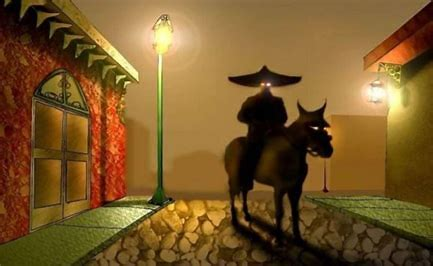
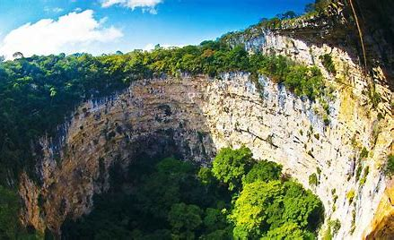
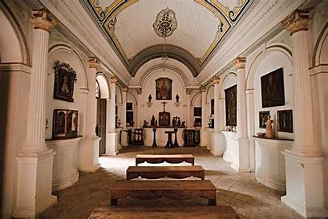

LEYENDAS DEL ESTADO CHIAPAS
meximiedo
¿CUAL ES LA HISTORIA DEL ESTADO Y COMO SURGIO?
el estado surgio por una serie de acontecimientos historicos los cuales se mencionan a continuacion
- Época Prehispánica
Chiapas fue habitado originalmente por diversas culturas indígenas como los mayas, los zoques y los chiapanecas. Estas civilizaciones desarrollaron importantes centros ceremoniales y ciudades como Palenque, Yaxchilán y Toniná, dejando un rico legado arqueológico y cultural.
- La Conquista Española
En el siglo XVI, la región fue conquistada por los españoles. En 1528, el conquistador Diego de Mazariegos fundó la ciudad de San Cristóbal de las Casas. Durante el período colonial, Chiapas formó parte de la Capitanía General de Guatemala, que a su vez pertenecía al Virreinato de Nueva España.
- Independencia de México
Con la independencia de México en 1821, Chiapas enfrentó una decisión crucial: unirse a México o permanecer como parte de Guatemala. Tras un plebiscito en 1824, la mayoría de la población votó por unirse a México, lo que llevó a la integración formal de Chiapas a la nueva nación.
- Desarrollo y Modernización
Durante el siglo XIX y principios del XX, Chiapas experimentó varios cambios políticos y sociales. La construcción de infraestructura y la explotación de recursos naturales impulsaron su economía. Sin embargo, también enfrentó conflictos y movimientos sociales, incluyendo la Revolución Mexicana y más recientemente, el levantamiento zapatista en 1994.
en este estado tan bello y tan lindo que tiene mexico se encuentran algunas leyendas que son especiales en este estado y aqui como les redacto se las voy mencionando y espero que sea de tu agrado las leyendas que te traigo.
LA PRIMERA LEYENDA ES EL SOMBRERÓN
La leyenda del Sombrerón es una de las historias más enigmáticas y populares en Chiapas. Este personaje misterioso, conocido por su atuendo oscuro y su gran sombrero, ha sido una figura aterradora y fascinante en la tradición oral de la región.
- Origen de la Leyenda
La leyenda del Sombrerón tiene raíces profundas en el folclore mesoamericano y se ha transmitido de generación en generación. Aunque versiones de esta leyenda existen en otras partes de México y América Central, en Chiapas tiene características específicas que la hacen única.
- El Personaje:
El Sombrerón es descrito como un hombre alto y delgado que viste completamente de negro. Lleva un sombrero de ala ancha que cubre gran parte de su rostro, lo que añade un aire de misterio a su figura. Su presencia es especialmente notable en noches de luna llena y en lugares solitarios, como caminos rurales y las afueras de los pueblos.
- La Historia:
La leyenda cuenta que el Sombrerón aparece ante mujeres jóvenes y hermosas, a quienes trata de seducir con su encanto misterioso. A menudo, se le ve tocando una guitarra y cantando melodías hipnóticas para atraer a sus víctimas. Una vez que logra capturar su atención, las sigue a todas partes, apareciendo en sus sueños y causando que se obsesionen con él.
Las jóvenes que caen bajo su hechizo sufren terriblemente. Pierden el apetito, el sueño y se sumen en una profunda tristeza y melancolía. Sus familias, al verlas en tal estado, a menudo buscan la ayuda de curanderos y chamanes para romper el hechizo del Sombrerón.
- Encuentros y Consecuencias
Aquellos que aseguran haber visto al Sombrerón relatan experiencias aterradoras. Algunos dicen haber escuchado susurros y risas en la oscuridad, y otros han sentido una presencia opresiva y escalofriante cerca de ellos. Se cree que el Sombrerón puede hacer que los caballos se asusten y que los perros ladren sin motivo aparente.
En algunos casos, las mujeres que logran escapar de su influencia quedan marcadas de por vida, con recuerdos perturbadores de su encuentro con esta figura espectral. La leyenda también advierte a las jóvenes de no salir solas en la noche y de evitar a los extraños que puedan encontrarse en el camino.
- Interpretaciones y Significado:
La leyenda del Sombrerón en Chiapas es una mezcla de advertencia y misterio. Sirve como una lección sobre los peligros de sucumbir a las tentaciones desconocidas y la importancia de mantener la prudencia y el juicio. También refleja el temor y la fascinación por lo sobrenatural y lo desconocido, elementos comunes en el folclore de muchas culturas.
En un contexto más amplio, la historia del Sombrerón puede interpretarse como una metáfora de los peligros de la obsesión y la pérdida de control, y de cómo las fuerzas oscuras pueden influir en la vida de las personas.
- Conclusión:
La leyenda del Sombrerón en Chiapas es una historia rica en simbolismo y misterio, que continúa siendo parte integral del folclore y la cultura de la región. A través de sus relatos, se mantiene viva la tradición oral y se transmite una advertencia sobre los peligros que acechan en la oscuridad de la noche.

A CONTINUACION MOSTARE UN ARCHIVO AUDIO VISUAL DONDE CUENTA LA HISTORIA Y ALGUNAS OTRAS CARACTERISTICAS
LA SEGUNDA LEYENDA ES DE LE SIMA DE LAS COTORRAS DE CHIAPAS
La Sima de las Cotorras es una impresionante formación geológica en el estado de Chiapas, conocida tanto por su espectacular belleza natural como por las fascinantes leyendas que la rodean. Este lugar, situado en la Selva El Ocote, cerca del municipio de Ocozocoautla, es un gran sumidero que alberga miles de cotorras y loros, lo que le da su nombre.
- Descripción del Lugar:
La Sima de las Cotorras es una enorme cavidad natural con una profundidad de aproximadamente 140 metros y un diámetro de 160 metros. Sus paredes están cubiertas de vegetación y albergan pinturas rupestres que datan de tiempos prehispánicos. Al amanecer y al anochecer, miles de cotorras salen y regresan a la sima, creando un espectáculo natural impresionante.
- La Leyenda:
La leyenda de la Sima de las Cotorras es una historia de amor y tragedia, como muchas otras en la rica tradición oral de Chiapas.
- El Romance Prohibido:
Según la leyenda, hace muchos años, en una aldea cercana a la sima, vivía una joven pareja profundamente enamorada. Sin embargo, su amor era prohibido por sus familias debido a rivalidades y conflictos de antaño. Los amantes, desesperados por estar juntos, decidieron escapar y buscar refugio en la naturaleza.
- El Refugio en la Sima:
Una noche, huyeron y encontraron la Sima de las Cotorras. Decidieron esconderse en el fondo del sumidero, creyendo que allí estarían a salvo de quienes los perseguían. La cueva les proporcionó un refugio temporal, pero la pareja pronto se dio cuenta de que no podían sobrevivir mucho tiempo en ese lugar inhóspito.
- La Tragedia:
Desesperados y sin esperanza de escapar de su situación, la pareja tomó una decisión trágica. En un acto de amor eterno, decidieron acabar con sus vidas juntos, lanzándose al abismo de la sima. Se dice que sus espíritus permanecen en el lugar, y que en ciertas noches se pueden escuchar sus lamentos y susurros de amor eterno.
- Apariciones y Misterios:
Muchos lugareños y visitantes afirman haber sentido una presencia extraña en la Sima de las Cotorras. Algunos dicen haber escuchado susurros y gemidos en la noche, mientras que otros han visto sombras y figuras etéreas en los alrededores de la sima. Estos fenómenos se atribuyen a los espíritus de los amantes trágicos que, según la leyenda, todavía rondan el lugar.
- Interpretación de la Leyenda:
La leyenda de la Sima de las Cotorras refleja temas universales de amor prohibido, sacrificio y la lucha contra las adversidades. Sirve como una advertencia sobre las consecuencias de las rivalidades y odios sin sentido, y como una celebración del amor eterno que ni siquiera la muerte puede romper.
- Conexión con la Naturaleza:
El entorno natural de la Sima de las Cotorras, con su belleza y misterio, es el escenario perfecto para esta leyenda. Las cotorras que habitan en la sima y su comportamiento espectacular al amanecer y al anochecer añaden un elemento mágico al lugar, haciéndolo parecer aún más encantado.
- Conclusión:
La leyenda de la Sima de las Cotorras es una parte integral del patrimonio cultural de Chiapas. Es una historia que combina el misterio, la tragedia y el amor, resonando profundamente con aquellos que la escuchan. A través de esta leyenda, se perpetúan las tradiciones orales y se mantiene viva la conexión de la comunidad con su entorno natural y su historia.
POR DESGRACIAS NO ENCONTRE ARCHIVO AUDIO VISUAL DE LA LEYENDA SOLO VIDEOS DE COMO SE VE LA SIMA

LA TERCERA LEYENDA ES DE NA BOLOM DE CHIAPAS
Na Bolom, que significa "Casa del Jaguar" en lengua tzotzil, es una antigua casa ubicada en San Cristóbal de las Casas, Chiapas. Este lugar tiene una historia rica y fascinante, ligada a la conservación de la cultura maya y lacandona, y se ha convertido en un museo y centro cultural. La leyenda de Na Bolom es tanto un tributo a sus fundadores como una narración sobre el legado y la presencia espiritual que se dice aún ronda sus pasillos.
- Historia de Na Bolom:
Na Bolom fue fundada por los investigadores y activistas daneses Frans Blom y Gertrude Duby Blom. Frans Blom era un arqueólogo y explorador, y Trudy Blom, una periodista y fotógrafa. Ambos dedicaron sus vidas a la preservación de las culturas indígenas de Chiapas, especialmente la de los lacandones. Compraron la casa en 1950 y la convirtieron en un centro de investigación, preservación y educación sobre las culturas indígenas de la región.
- La Leyenda:
- La Dedicación de Trudy Blom:
Gertrude Duby Blom, conocida cariñosamente como Trudy, fue una figura apasionada y carismática. Se dedicó no solo a la investigación sino también a la defensa de los derechos de los indígenas y la conservación de la selva lacandona. Tras la muerte de su esposo Frans en 1963, Trudy continuó con su labor hasta su propia muerte en 1993.
- La Presencia Fantasmal:
La leyenda dice que Trudy Blom nunca dejó realmente Na Bolom. Muchos visitantes y trabajadores han reportado sentir su presencia en la casa. Algunos dicen haber visto su figura fantasmagórica caminando por los pasillos, cuidando las exposiciones y revisando los libros y documentos que tanto amaba. Otros han sentido una energía reconfortante y protectora mientras trabajan o recorren la casa.
- Encuentros y Manifestaciones:
Los relatos sobre encuentros con el espíritu de Trudy Blom son variados. Algunos visitantes han mencionado sentir una mano suave sobre su hombro mientras leen sobre la historia de los lacandones. Otros han escuchado susurros en las habitaciones que solía frecuentar. La presencia de Trudy es descrita como benigna, como si su espíritu estuviera velando por la casa y su legado.
- Significado y Simbolismo:
La leyenda de Na Bolom es un testimonio del impacto duradero de Trudy y Frans Blom en la comunidad y la cultura de Chiapas. Su dedicación a la preservación cultural y ambiental ha dejado una huella profunda, y la creencia de que Trudy aún cuida de Na Bolom refleja el respeto y cariño que la gente siente por su trabajo y su memoria.
- Lección Cultural:
Esta leyenda subraya la importancia de la preservación cultural y la defensa de los derechos indígenas. También es una historia sobre el compromiso y la pasión, y cómo estos valores pueden trascender incluso la muerte.
- Conexión Espiritual:
La presencia de Trudy Blom en Na Bolom simboliza la conexión profunda entre los vivos y los muertos, y cómo los lugares importantes pueden conservar la energía y los espíritus de aquellos que los han amado y cuidado.
- Conclusión:
La leyenda de Na Bolom en Chiapas es una hermosa narración que celebra el legado de Trudy y Frans Blom. A través de las historias de encuentros espirituales y la presencia continua de Trudy, se mantiene viva la misión de Na Bolom: proteger y preservar la rica herencia cultural y natural de Chiapas. Esta leyenda no solo enriquece el folclore local, sino que también inspira a futuras generaciones a continuar con el importante trabajo de conservación y respeto por las culturas indígenas.

A CONTINUACION MOSTRARE UN ARCHIVO AUDIO VISUAL DONDE HABLAN DE ESTA LEYENDA
TOCA PARA REGRESAR A LA PAGINA PRINCIPAL